Analyzing Entry Pages Performance

About Project
In this scenario, we have been tasked with analyzing a fictional company's data (eCommerce Website). Our stakeholders have tasked us with identifying what website has the highest sessions visited and which entry page has lower bounced rate, Further, we are tasked with determining our marketing strategies based on our insights.
To look at each step to analyze, simply click on the tab below
Action Items
Result :
Visualization Dashboard
Step 1 :
Data Exploration
Step 2 :
Find Top Entry Pages
Step 3 :
Find Bounced Rate
Step 4 :
Entry Page
A/B Testing
Step 5 :
Entry Pages Week Compare
Step 1 : Data Exploration
The first step is to take a look at the data by viewing everything within the table.
Table 1 : Website Sessions
SELECT
*
FROM
website_sessions;
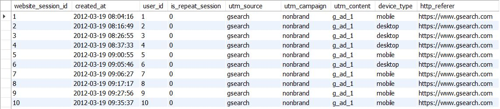
This table consisting of website_session_id, created_at, user_id, is_repeat_session, utm_source, utm_campaign, utm_content, device_type, and http_referer.
Key Fields
website_session_id = session id per website visited
created_at = session created date
utm_source = traffic source to website
SELECT
*
FROM
website_pageviews;
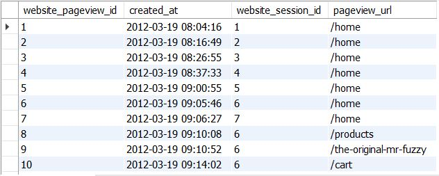
This table consisting of website_pageview_id, created_at, website_session_id and pageview_url.
Key Fields
website_pageview_id = pageview id per page visited
website_session_id = session id per website visited
created_at = pageview created date
pageview_url = landing page where session created
Finally, let me get our head around the site by pulling the most-viewed website pages, ranked by session volume.
SELECT
pageview_url,
COUNT(DISTINCT website_pageview_id) AS pageview_session
FROM
website_pageviews
WHERE
created_at < 2012-06-19' -- before /lander
GROUP BY
pageview_url
ORDER BY
pageview_session DESC;
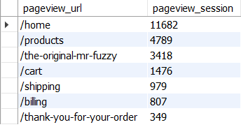
- "/home" has the most-viewed website pages.
Next Steps
1. Dig into whether this list is also representative of our top entry pages.
2. Analyze the performance of each of our top pages to look for improvement opportunity.
Close Tab
Step 2 : Find Top Entry Pages
What url is our top entry page ?
Let's have a closer look at website_pageviews table.
SELECT
website_session_id,
pageview_url
FROM
website_pageviews;
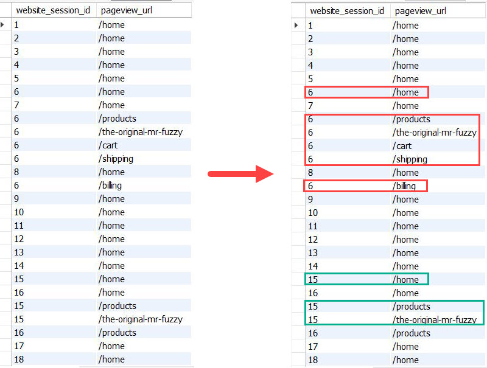
- We see that some website_session_id (6 and 15) has multiple pageview_url.
- The first pageview_url of each website_session is "/home".
It may save to assume that entry page of the website is "/home'
But we can't be sure until we can prove that It's really what we think. Let prove it together !
Step to prove
Step 1 : Find the first pageview for each session
Step 2 : Find the url the customer saw on that first pageview
Step 1 : Find the first pageview for each session
From what we saw earlier (some website_session_id [6 and 15] has multiple pageview_url), in order to find first page url that customer land, we have to find minimum pageview id by using MIN() function for each relevant website session.
SELECT
website_session_id,
MIN(website_pageview_id) AS first_pageview
FROM
website_pageviews wp
WHERE
created_at < '2012-06-19' -- before /lander
GROUP BY
website_session_id;
We use CREATE TEMPORARY TABLE here as we are going to use this temp table for the next query.

Then, use the same script above to create temporary table that we are going to use to identify pageview url.
CREATE TEMPORARY TABLE first_pageview_per_session
SELECT
website_session_id,
MIN(website_pageview_id) AS first_pageview
FROM
website_pageviews wp
WHERE
created_at < '2012-06-19' -- before /lander
website_session_id;
Step 2 : Find the url the customer saw on that first pageview
SELECT
wp.pageview_url AS landing_page_url,
COUNT(DISTINCT fp.website_session_id) AS sessions_hitting_page
FROM first_pageview_per_session AS fp
LEFT JOIN website_pageviews AS wp
ON fp.first_pageview = wp.website_pageview_id
GROUP BY
wp.pageview_url;

- We see all of our traffic is landing on the homepage.
- Homepage has 11682 sessions which is the most among other pages.
Next Steps
1. Analyze landing page performance, for the homepage specifically.
2. Think about whether or not the homepage is the best initial experience for all customers.
Close Tab
Step 3 : Find Bounced Rate
Ask
Is homepage really the best initial experience for all customers?
Request
Can you pull bounce rates for traffic landing on the homepage? I would like to see three numbers .. Sessions, Bounced Sessions and % of Sessions which bounced (aka "Bounces Rate").
Step to analyze
- STEP 1 : finding the first website_pageview_id for relevant session
- STEP 2 : identifying the landing page for each session
- STEP 3 : counting pageviews for each session, to identify "bounced"
- STEP 4 : summarizing by counting total sessions and bounced session
STEP 1 : finding the first website_pageview_id for relevant session
We use the same approach as before, find minimum pageview id by using MIN() function for each relevant website session.
CREATE TEMPORARY TABLE first_pageview
SELECT
website_session_id,
MIN(website_pageview_id) AS min_pv_id
FROM
website_pageviews
WHERE
created_at < '2012-06-19' -- before /lander-1
GROUP BY
website_session_id;
We use CREATE TEMPORARY TABLE here as we are going to use this temp table for the next query.
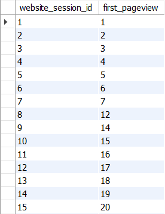
Get pageview_url field by LEFT JOIN first_pageview table ON website_pageviews table.
CREATE TEMPORARY TABLE session_w_landing_page
SELECT
fp.website_session_id,
wp.pageview_url AS landing_page
FROM first_pageview AS fp
LEFT JOIN website_pageviews AS wp
ON fp.website_session_id = wp.website_session_id
WHERE
wp.pageview_url = '/home';
We also use CREATE TEMPORARY TABLE here as we are going to use this temp table for the next query.
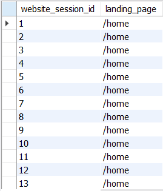
CREATE TEMPORARY TABLE bounced_only
SELECT
swl.website_session_id,
swl.landing_page,
COUNT(wp.website_pageview_id) AS count_of_page_viewed
FROM session_w_landing_page AS swl
LEFT JOIN website_pageviews AS wp
ON swl.website_session_id = wp.website_session_id
GROUP BY
swl.website_session_id
HAVING
count_of_page_viewed = 1; -- select only bounced session
pageview_session DESC;
- Get website_pageview_id field by using LEFT JOIN first_pageview table ON website_pageviews table.
- COUNT website_pageview_id from website_pageviews table to get pageview counts
- HAVING count_of_page_viewed = 1 to select only bounced sessions
- CREATE TEMPORARY TABLE to use this temp table for the next query
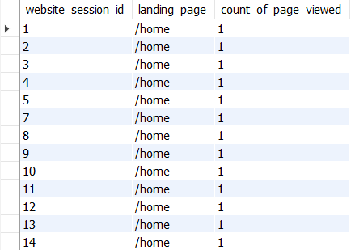
SELECT
swl.landing_page,
COUNT(swl.website_session_id) AS sessions,
COUNT(bo.count_of_page_viewed) AS bounced_session,
COUNT(bo.count_of_page_viewed) / COUNT(swl.website_session_id) AS bounced_rate
FROM session_w_landing_page AS swl
LEFT JOIN bounced_only AS bo
ON swl.website_session_id = bo.website_session_id;
- LEFT JOIN session_w_landing_page table ON bounced_only table in order to get count_of_page_viewed.
- COUNT website_session_id from session_w_landing_page table to get sessions
- COUNT count_of_page_viewed from bounced_only table to get bounced session
- Divide COUNT count_of_page_viewed from bounced_only table by website_session_id from session_w_landing_page table to get bounced rate
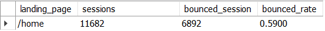
- Homepage has almost a 60% bounce rate, which is considerably very high for paid search.
- Considered from bounce rate, Homepage may not be the best initial experience for customers
1. Keep an eye on bounce rates, which represent a major area of improvement.
2. Help team measure and analyze a new page that we will improve performance, and analyze the results of an A/B split test against the homepage.
Close Tab
Step 4 : Entry Pages A/B Testing
AskWith a new page that we will improve performance and analyze, what is the results of an A/B split test against the homepage?
Request
Can you pull bounce rates for the two groups so we can evaluate the new page? Make sure to just look at tht time period where /lander-1 was getting traffic, so that it is a fair comparison.
Step to analyze
- STEP 1 : find out when the new /lander launched
- STEP 2 : finding the first website_pageview_id for relevant session
- STEP 3 : identifying the landing page for each session
- STEP 4 : counting pageviews for each session, to identify "bounces"
- STEP 5 : summarizing by counting total sessions and bounced session, by LP
STEP 1 : find out when the new /lander launched
SELECT
MIN(created_at) AS first_created,
MIN(website_pageview_id) AS first_pageview_id
FROM
website_pageviews
WHERE
pageview_url = '/lander-1'
AND created_at IS NOT NULL;
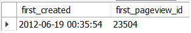
- MIN created_at to get the minimum date created
- MIN created_at to get the minimum website_pageview_id
- WHERE pageview_url = '/lander-1 as we need to get information about /lander-1
We use the same approach as before, find minimum pageview id by using MIN() function for each relevant website session.
CREATE TEMPORARY TABLE first_pageview
SELECT
ws.website_session_id,
MIN(wp.website_pageview_id) AS min_pv_id
FROM website_sessions AS ws
INNER JOIN website_pageviews AS wp
ON ws.website_session_id = wp.website_session_id
WHERE ws.utm_source = 'gsearch'
AND ws.utm_campaign = 'nonbrand'
AND wp.website_pageview_id > 23504
AND wp.created_at < '2012-07-28'
GROUP BY ws.website_session_id;
We use CREATE TEMPORARY TABLE here as we are going to use this temp table for the next query.
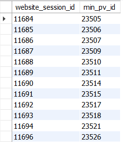
Get pageview_url field by LEFT JOIN first_pageview table ON website_pageviews table.
CREATE TEMPORARY TABLE home_lander_w_landing_page
SELECT
fp.website_session_id,
wp.pageview_url
FROM first_pageview AS fp
LEFT JOIN website_pageviews AS wp
ON fp.website_session_id = wp.website_session_id
WHERE
wp.pageview_url IN ('/home','/lander-1')
GROUP BY
fp.website_session_id;
- WHERE wp.pageview_url IN ('/home','/lander-1') as we need only two entry pages.
- We also use CREATE TEMPORARY TABLE here as we are going to use this temp table for the next query.
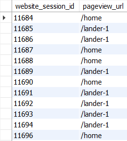
CREATE TEMPORARY TABLE bounced_only
SELECT
hlwl.website_session_id,
hlwl.pageview_url,
COUNT(DISTINCT wp.website_pageview_id) AS count_of_page_viewed
FROM home_lander_w_landing_page AS hlwl
LEFT JOIN website_pageviews AS wp
ON hlwl.website_session_id = wp.website_session_id
GROUP BY
hlwl.website_session_id
HAVING
COUNT(DISTINCT wp.website_pageview_id) = 1;
- Get website_pageview_id field by using LEFT JOIN home_lander_w_landing_page table ON website_pageviews table.
- COUNT website_pageview_id from website_pageviews table to get pageview counts
- HAVING count_of_page_viewed = 1 to select only bounced sessions
- CREATE TEMPORARY TABLE to use this temp table for the next query
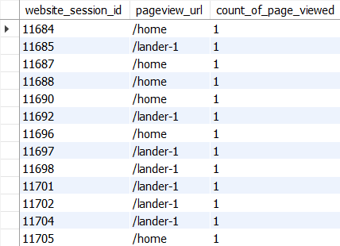
SELECT
hlwl.pageview_url AS landing_page,
COUNT(DISTINCT hlwl.website_session_id) AS sessions,
COUNT(bo.count_of_page_viewed) AS bounced_sessions,
COUNT(bo.count_of_page_viewed) / COUNT(DISTINCT hlwl.website_session_id) AS bounced_rate
FROM
home_lander_w_landing_page AS hlwl
LEFT JOIN bounced_only AS bo
ON hlwl.website_session_id = bo.website_session_id
GROUP
BY hlwl.pageview_url;
- LEFT JOIN home_lander_w_landing_page table ON bounced_only table in order to get count_of_page_viewed.
- COUNT website_session_id from home_lander_w_landing_page table to get sessions
- COUNT count_of_page_viewed from bounced_only table to get bounced session
- Divide COUNT count_of_page_viewed from bounced_only table by website_session_id from home_lander_w_landing_page table to get bounced rate
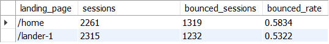
- The new lander page has lower 53 % bounce rate compared to homepage which has almost 60% bounce rate, new lander is very successful in this challenge.
- Considered from bounce rate, new lander may be a better initial experience for customers compared to homepage
1. Help team confirm that traffic is all running to the new custom lander after campaign updates.
2. Keep an eye on bounce rate and help the team look for other areas to test and optimize.
Close Tab
Step 5 : Entry Pages Week Compare
AskIs all traffic running to the new custom lander after campaign updates?
What is other areas to test and optimize to serve better experience for customers?
Request
Could you pull the volume of paid search nonbrand traffic landing on /home and /lander-1, trended weekly since June 1st?
Could you pull our overall paid search bounce rate trended weekly?
Step to analyze
- STEP 1 : finding the first website_pageview_id for relevant session
- STEP 2 : identifying the landing page of each session
- STEP 3 : counting pageviews for each session, to identify "bounces"
- STEP 4 : summarizing by week(bounce rate, sessions to each lander)
CREATE TEMPORARY TABLE sessions_w_min_pv_id_and_view_count
SELECT
ws.website_session_id,
MIN(wp.website_pageview_id) AS first_pageview_id,
COUNT(wp.website_pageview_id) AS count_pageviews
FROM website_sessions ws
LEFT JOIN website_pageviews wp
ON wp.website_session_id = ws.website_session_id
WHERE ws.created_at > '2012-06-01'
AND ws.created_at < '2012-08-31'
AND utm_source = 'gsearch'
AND utm_campaign = 'nonbrand'
GROUP BY
wp.website_session_id;
- Get website_pageview_id field by using website_sessions table LEFT JOIN website_pageviews table.
- MIN website_pageview_id to get first pageview id
- COUNT website_pageview_id to get pageview counts
- WHERE ws.created_at > '2012-06-01' start point from the requestor
- WHERE ws.created_at < '2012-08-31' end point from the requestor
- AND utm_source = 'gsearch' AND utm_campaign = 'nonbrand' as the requestor want us to pull the volume of paid search nonbrand traffic
- We use CREATE TEMPORARY TABLE here as we are going to use this temp table for the next query.
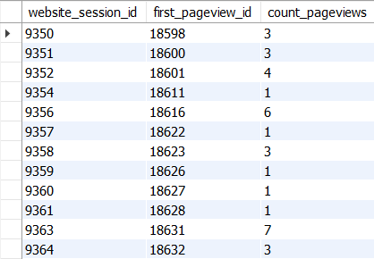
CREATE TABLE sessions_w_counts_lander_and_created_at
SELECT
swmv.website_session_id,
swmv.first_pageview_id,
swmv.count_pageviews,
wp.pageview_url AS landing_page,
wp.created_at AS session_created_at
FROM sessions_w_min_pv_id_and_view_count AS swmv
LEFT JOIN website_pageviews AS wp
ON swmv.website_session_id = wp.website_session_id;
- Get pageview_url and created_at fields by using sessions_w_min_pv_id_and_view_count table LEFT JOIN website_pageviews table.
- We also use CREATE TEMPORARY TABLE here as we are going to use this temp table for the next query.
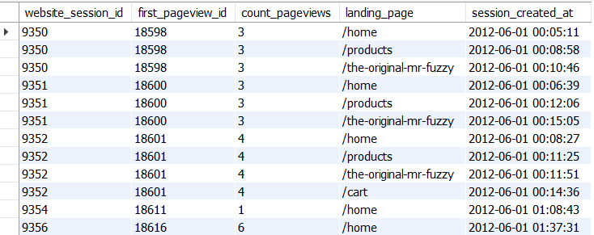
SELECT
MIN(DATE(session_created_at)) AS week_start_date,
COUNT(DISTINCT CASE WHEN count_pageviews = 1 THEN website_session_id ELSE NULL END)
/ COUNT(DISTINCT website_session_id) AS bounced_rate,
COUNT(DISTINCT CASE WHEN landing_page = '/home' THEN website_session_id ELSE NULL END) AS home_sessions,
COUNT(DISTINCT CASE WHEN landing_page = '/lander-1' THEN website_session_id ELSE NULL END) AS lander_sessions
FROM
sessions_w_counts_lander_and_created_at
GROUP BY
WEEK(session_created_at);
- COUNT CASE WHEN landing_page = '/home' to get home sessions
- COUNT CASE WHEN landing_page = '/lander-1' to get lander sessions
- Divide COUNT CASE WHEN count_pageviews = 1 by COUNT DISTINCT website_session_id to get bounced_rate
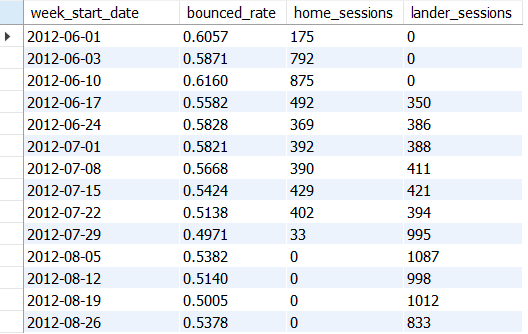
- Since week 17 Jun, all traffic running to the new custom lander after campaign updates
- After starting week 5 Aug, which we stop launching Homepage. We can see lander has better sessions and lower bounced rate compared to Homepage.
1. Keep testing and optimizing the new lander page.
2. Stay tuned for the next wave of analysis to help improve the business.
Close Tab